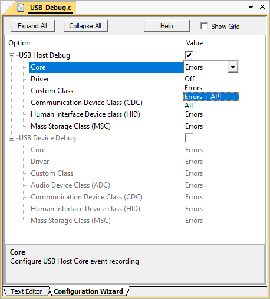

This chapter describes the software structure of the USB Host Component and explains its use for creating a USB Host application. This software component is available to users of MDK-Professional only.
The USB Host Component simplifies software development of microcontroller systems that allow to connect USB Devices. The attributes of the USB Host Component are:
- Complies with the USB 2.0 specification.
- Support for HID, MSC, CDC, and Custom USB Device Classes to be connected to the USB Host.
- Support for control, interrupt and bulk transfer types.
RTE Components
The following picture shows the relationships of the RTE Components with the microcontroller's USB Host peripheral (USB Controller). RTE Components provide configuration files and user code templates. Configuration files configure the RTE Components, hardware interfaces, memory resources and USB Host parameters. User code templates provide the skeleton for implementing support for different USB Device classes.

USB Host Structure
Create an Application
The steps to create a microcontroller application that functions as an USB Host are:
- Select RTE Components that are required for your application.
- Enable and configure the USB Host Driver.
- Configure the USB Host that connects the USB Middleware to the microcontroller USB peripheral.
- Configure the System Resources according to the USB Host component's Resource Requirements.
- Configure the parameters of the attached USB Devices.
- Implement the Application Code using code templates that are provided to support various USB Device Classes.
- Debug you application using the built-in mechanisms of the USB Component.
RTE Component Selection
The RTE Component selection is done in a few steps:
- From the USB Component:
- Select USB:CORE that provides the basic functionality required for USB communication.
- Set USB:Host to '1'. This creates one USB Host for communication with attached USB Devices.
- Select the desired support for USB Classes (HID/MSC/CDC/Custom Class). For example, select USB:Host:HID to support HID Class Devices only.
- From the Drivers Component:
- Select an appropriate USB Host driver suitable for your application.
- From the Device Component:
- Additional device specific drivers may be required according to the validation output.
- From the CMSIS Component:
- Select the CMSIS:CORE to provide the core interface to the processor.
- Select a suitable CMSIS:RTOS or CMSIS:RTOS2 that is a required for the application.

RTE Component Selection
USB Driver and Controller
The USB Host Driver and the USB Controller of the microcontroller need to be correctly configured. In particular this means:
- The USB Host Driver selected under the Drivers Component is typically configured with the RTE_Device.h configuration file. While this file provides multiple options, it is typically sufficient to enable the USB Host peripheral related to this driver. Some microcontrollers may require settings that related to a physical layer interface (PHY), the USB VBUS power and Overcurrent protection.
- The USB Controller of the microcontroller needs typically specific clock settings. Consult the user's guide of the microcontroller to understand the requirements. Alternatively you may copy the setup of an USB Host example that is provided for various evaluation boards.
USB Host Configuration
The USBH_Config_n.c file contains additional settings for the specific USB Host:
- The Driver Number is set according to the selected USB Controller. For single USB Device Controllers it will be '0'.
- Some microcontrollers can make use of different hardware Controller Interfaces. Consult the user's guide of the selected microcontroller to choose the correct setting.
Refer to Configuration for a detailed list of all available settings.
System Resource Configuration
For proper operation, the USB Host Component requires some system configuration settings. The requirements are:
- Additional stack size of 512 bytes. This can be configured in the device's file (
Stack_Size).
- The USB Device Component uses CMSIS-RTOS threads. In case RTX v5 is used no changes to RTX settings are necessary as all resources are allocated statically. In case RTX v4 is used you need to change following settings in file:
- Increase the Number of concurrent running user threads by number of threads required by USB Host
- Increase the Number of threads with user-provided stack size by number of threads required by USB Host
- Increase Total stack size [bytes] for threads with user-provided stack size by size of threads required by USB Host
- Enable User Timers
For more information, check the USB Host component's Resource Requirements section.
Configuration of Attachable USB Devices
In the USBH_Config_HID.h, USBH_Config_MSC.h, USBH_Config_CDC.h, or USBH_Config_CustomClass.h you can specify the number of concurrent USB Devices that the USB Host will support. This has an impact on the amount of memory that will be reserved in your application for the attachment of USB Devices. The Examples shows how to configure an USB Host to interact with different HID, MSC or CDC peripheral devices.
User Code Implementation
files provide function templates to support various USB Device Classes on the USB Host. The available functions are explained in the
Reference section of the USB Host Component. These routines can be adapted to the needs of the microcontroller application, in case different then default functionality is needed.
The following templates are available for the USB Host component:
| Template Name | Purpose |
| USBH_MSC.c | Required functions to support MSC devices. The template can be found here. |
| USBH_PL2303.c | Required functions to support the Prolific PL2303 USB to serial RS232 adapter. The template can be found here. |
| USBH_User_CustomClass.c | Required functions to support any USB Device class. The template can be found here. |
Debugging
USB Host Component is distributed in library form and doesn't allow its direct code debug. However it can be easily configured to generate debug events and provide dynamic visibility to the component operation.
Following variants can be selected for the USB:CORE software component in the Manage Run-Time Environment window:
- Debug: this variant supports event annotations for the and makes it very easy to analyze the internal operation of the USB Host Component during application debug. Event Recorder Support below explains how to configure and use this variant.
- Release: this variant does not include additional debugging code. Use this variant when deploying the application.
The figure below shows selection of the Debug variant.
The USB Host:Debug Events describes the events implemented in the USB Device Component.
Event Recorder Support
is a powerful tool that provides visibility to the dynamic execution of the program.
The USB Host Component generates a broad set of Debug Events for the Event Recorder and implements required infrastructure to interface with it.
To use the Event Recorder it is required to create an image with event generation support. The necessary steps are:
- : in the RTE management dialog select the Debug variant for the USB:CORE software component.
- : in the RTE management dialog enable the software component Compiler:Event Recorder.
- Ensure that Event Recorder is initialized preferably by if CMSIS-RTOS2 RTX v5 is used, or alternatively by calling the function in the application code.
- Event Recorder Configuration: if necessary, adjust default Event Recorder configuration.
- Build the application code, download it to the target hardware and start debug session.
Now, when the USB Host generates event information, it can be viewed in the .
Event Recorder Configuration
This section describes the configuration settings for the Event Recorder. The usage requires the debug variant of the USB:CORE software component; refer to Event Recorder Support for more information.
USB Event Generation Configuration
Selecting the USB:CORE debug variant will add the file USB_Debug.c to your project. Use this file to set the event generation configuration for USB core, drivers, and device classes separately. The file is available for USB Device and Host components.

USB_Debug.c file for event generation configuration
The following settings are available for event generation configuration of each module:
- Off means no events will be generated by the module
- Errors means only error events will be generated by the module
- Errors + API means error and API call events will be generated by the module
- All means all available events will be generated by the module. Besides error and API call events, this contains operation and detailed events.
Event IDs
The USB Host component uses the following event IDs:
| Component | Event ID |
| USBH_Core | 0xB0 |
| USBH_Driver | 0xB1 |
| USBH_CC | 0xB2 |
| USBH_CDC | 0xB3 |
| USBH_HID | 0xB4 |
| USBH_MSC | 0xB5 |